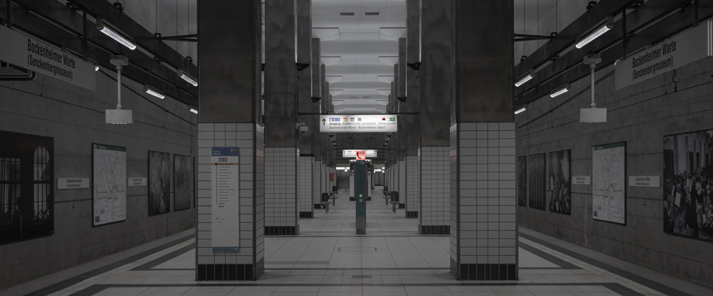

홈 > 회사소개 > 광고 사업
광고 사업

- 일상과 가장 가까운 광고, 철도 광고
- 코레일 유통은 KTX역사, 수도권 지하철 역사 및 차내 광고매체를 운영하는 철도 광고 전문기업입니다.
철도 광고 특징
-
- 주목성
- 일 평균 이용객 357만명의 높은 주목도! 이용객의 가시거리를 고려한 철도광고는 언제나 이용객의 시선에 위치해 있습니다.
-
- 효율성
- 지하철 광고는 높은 화제성을 창출하는 지역 관문 철도역 광고를 통해 브랜드 인지도와 신뢰성을 제고시킬 수 있습니다.
-
- 다양성
- 조명광고에서 프로모션 광고까지! 다양한 광고매체를 접목한 특색있는 철도역에서 광고주 맞춤형 광고를 만나보세요.